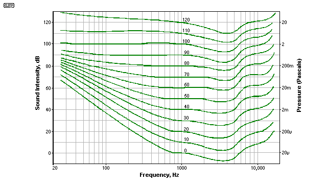
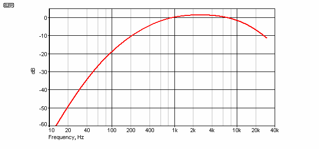
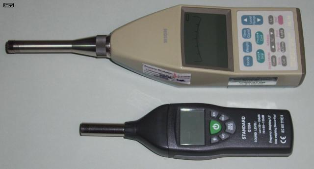

|
|
| Elliott Sound Products | Sound Level Measurements & Reality |
Copyright © 2012 Rod Elliott
Page Created 14 Sept 2012
 Articles Index
Main Index
Articles Index
Main IndexContents
All audible (and some inaudible) variations of air pressure are defined as sound. It is accepted by most people that sound one wishes to hear, such as music, speech, etc. is "sound", whereas sound that one does not wish to hear is "noise". There is no difference in terms of physics - an air pressure variation of 1 Pascal is 94dB SPL (Sound Pressure Level) regardless of the source or the listener. What is music for one person is noise to another, but there are several sound sources where few (if any) people will enjoy the listening experience. A neighbour's party (to which you weren't invited), aircraft flying overhead, a worker using a jackhammer or any other audible disturbance that causes annoyance, loss of sleep or just mild irritation will almost always be considered as noise rather than sound.
When noise is experienced, the tool of choice is a sound level meter. This is an instrument that measures the sound level and displays the result on either an analogue (moving coil) meter movement or digitally, using an electronic display (such as a liquid crystal display - aka LCD). To be useful, meters must be calibrated to a known SPL - most commonly 94dB at 1kHz. Predictably, the calibrator must itself be calibrated to a standard, and this continues up the "food chain" to internationally recognised calibration equipment.
Virtually all sound level meters sold worldwide contain filters to meet international standards, and these are discussed below. The overall accuracy is determined by the class of the instrument, with Class-0 being laboratory standard and Class-3 being useful only for getting a rough idea of the SPL. In between are Class-1 and Class-2 instruments, and these are the ones that will normally be used to determine if there is a legally enforceable breach of noise limits. Class-1 is preferred but expensive.
When a sound level reading is obtained, it is (or should be) written up as follows ...
The meter reading response time is specified, so F and S have a specific meaning. They are not random, but have exact values as indicated in standards documents. Fast response has a time constant of 125ms and Slow response uses a time constant of 1 second. I (Impulse) time-weighting is no longer used, but the time constant is 35ms.
The response and time weightings may be combined as follows ...
Another term you will see is Leq. The Leq is the "Equivalent Continuous Sound Level", that is to say it is the average sound level over a specified time interval. There is no time constant applied to the Leq. The Leq is best described as the Average Sound Level over the period of the measurement. It is usually measured with A-weighting (LAeq). Because it is an average, it will settle to a steady value, and this makes it much easier to read accurately than a simple instantaneous Sound Level. Being an average, it's also showing the total energy of the noise being measured, so is potentially a better indicator of possible hearing damage or the likelihood that the noise will cause complaints. Leq can be measured over a period of seconds to hours.
A sound level meter that measures Leq (or Lavg - average SPL) is usually referred to as an "Integrating Sound Level Meter" and it should meet the standards IEC60804, IEC61672 or ANSI S1.4, depending on country specific requirements.
While it may appear that I'm targeting the wind industry in this article, that's not really the case. However, it must be considered that there are more and louder complaints about wind turbines than almost any other single noise source, and there has to be a reason why this is so. The primary reason is the use of A-weighting, which in the opinion of the author is almost always unjustified. A-weighting is only applicable to a small number of measurements at very low SPL, and must not be used where there is significant low frequency energy, tonality or rhythm.
In fact, the debate about A-weighting is most commonly raised specifically because of wind turbine noise. There have always been people who have never liked A-weighting, but their complaints were transient for the most part because very few noises continue for years. Most complaints about noise target a specific incident or series of incidents that are temporary, rather than continuous long-term. Other long-term problem noises include rail and major highways, but in most cases the noise source was there well before the people who complain about it moved in. Neither of these noise sources contain significant amounts of sub-audible noise (infrasound), although trains can create significant vibration (travelling through the earth, rather than air). Vibration is another topic altogether.
In case you missed it above, I must make it clear from the outset that I do not agree with the use of weighting filters, since they are not - despite claims, standards and legislation to the contrary - an accurate representation of human hearing. Nor do they predict the potential for annoyance to people other than by accident. Indeed, it could be argued that the use of weighting filters (in particular A-weighting) is designed to provide a highly optimistic measurement that rarely correlates with perception or annoyance.
In fact, the standard A-weighting curve is accurate at or below one SPL, assuming that the listener has 'Standard' ears. Based on the 'Equal Loudness Curve' (see below), the closest match is at or near 30dB SPL - an unrealistically low noise level by today's standards. I would suggest the A-weighting curve may have relevance somewhere around 40dB SPL (unweighted!) and below. Indeed, many years ago that's exactly when A-weighting was used ... only for low level (below 40dB SPL) noise. Today, it is mandated for all sound level measurements in almost all countries, with no regard for the actual SPL. As will be shown below, this has caused many noise affected people to doubt the science, and it has to be said that there is considerable justification for their doubt.
To obtain any correlation with reality, a noise measured using A-weighting must be ...
The vast majority of real-world measurements do not fulfil these criteria, and A-weighted noise level measurements will give a completely unrealistic reading that does not reflect the audibility or annoyance value of the overall sound. This is especially true for very low frequency signals, amplitude modulated noise and/ or any rhythmic sound. In some instances there is provision for a 'penalty' of 5dB that is added to the A-weighted SPL. This supposedly compensates for the noise having characteristics that make the use of A-weighting unsuitable.
One has to be very cynical of these measurements when the basic measurement is taken using a filter that is clearly inappropriate, then adding a fixed 5dB penalty. Everything is set in stone, and there is usually no opportunity to protest because the meter is always deemed to be right ... even when it's patently obvious that it is completely wrong!
When the police or council ranger measure the noise from a car exhaust or your neighbour's party, they happily use A-weighting - it's in the legislation in most countries, and it's unlikely that the officer concerned has even the most rudimentary understanding of what it is or does. That is very scary! People with little or no training, taking noise measurements, and expected to know how sound propagates. Then they are made to use an arbitrary filter (the A-weighting filter) that is almost always inappropriate for the type of noise and the actual SPL. The sound level meter they use must be accurate to within 1dB or better, yet simply moving the noise source or measurement point by a few metres can cause a big change - perhaps as much as 10dB or more, depending on predominant frequency and surroundings.
The purpose of the weighting filter is supposedly to account for the fact that human hearing is less sensitive at low and high frequencies than in the upper midrange. The most troubling (and totally unrealistic) part is that the weighting filter is applied regardless of the actual SPL, and without regard to the type of noise. The IEC standard 61672-1:2003 mandates the inclusion of an A-frequency-weighting filter in all sound level meters. Some cheap meters offer nothing else! At any (unweighted) SPL, potentially intrusive LF sound is ignored when an A-weighting filter is employed - even though the noise may be clearly audible to the person taking the measurement!
A-weighting filters are (supposedly) based on the Fletcher-Munson curves reproduced below, which show the variation of sensitivity at different sound levels. It is clear that any loss of sensitivity is highly dependent upon the actual SPL, but this is not generally considered. The idea that a single filter can represent the true subjective annoyance potential at all levels is clearly not just wrong, but seriously wrong. Despite this, A-weighting is a worldwide standard procedure.

Figure 1 - Fletcher Munson Curve
Each 10dB increase in the Figure 1 curves represents the sound being twice or half as loud, because this is the way our hearing works. For example, to get a sound system to sound "twice as loud" according to listeners, the amplifier power must be increased by 10 times. Assuming the use of the same speaker system, a 200W (average) audio signal is perceived as twice as loud as a 20W signal, but a 40W signal is only 3dB greater - a just perceptible change to the listener. There are other (subtle) influences, but in general this is verified in controlled tests.
What the chart shows is that as the SPL is reduced, our ability to detect low or high frequency noise is reduced, so measurements should reflect this phenomenon. While it is undeniable that the chart above represents reality in terms of human hearing [1], I remain unconvinced that A-weighting is a valid test methodology unless the absolute sound intensity is specified. In addition, it only works with wide band noise. If a nuisance sound (noise) has any rhythm or tonality, you cannot use A-weighting to measure the likely 'annoyance value' and the meter will badly underestimate the audibility and intrusion characteristics of the noise.
A-weighting has some validity for thermal noise measurements of audio amplifiers and other sound equipment, because the noise from most equipment is at or below the threshold of audibility. There are some sounds that seem (at a casual glance) to defy all measurement standards, and remain audible (albeit at very low level) despite all the 'evidence' that this should not be so. As with all such things, experience and practical application are far more important than the absolute indication on a meter.
When dealing with audio electronics, a piece of equipment that is essentially 'noise-free' for all intents and purposes is comparatively easy, because the ambient noise level in most urban or suburban areas is likely to be far higher than the residual noise of most audio equipment. For example, 80dB signal to noise ratio for a car hi-fi system is not really useful for the most part, but is easy to achieve. Even the most expensive luxury cars generate far more engine and road noise than any tuner/cassette/CD system, and this is apart from all the other external noise generated by other vehicles on the road.
Remember that if the car audio system has 80dB S/N ratio, noise referred to 100dB SPL will be at only 20dB SPL. One is seriously loud (and if sustained may damage your hearing after about 15 minutes), and the other is very quiet indeed. Many older people will not be able to hear sound at that level - even if there is no external noise at all. Anyone who has listened to 100dB SPL for 1/2 hour or so (regardless of age) will be unable to hear 20dB SPL until at least 24 hours has passed between the two listening sessions.
It is worth noting that the Fletcher/ Munson curves were devised in 1933, with a test group that apparently consisted of only about 12 people. Equipment of the day was very limiting by today's standards, but response was plotted between 25Hz and 16kHz (in 1933 even that was quite a feat!). The above curve is considered to be gospel throughout the industry. I'm not disputing that the general trends are accurate (there would hopefully have been changes if errors were found), but I am astonished that test data from so long ago has managed to stand the test of time. More recent tests of very low frequencies have added to our understanding, but between 25Hz and 100Hz the existing curve has been in reasonable agreement with the latest data.
One thing that seems to have been missed by a great many people is the SPL range between 'just audible' and 'seriously loud'. At 1kHz (and assuming very good hearing), this ranges from 0dB (the threshold of hearing) up to 100dB, which is quite loud enough. That's a range of 100dB. However, at 31.5Hz, the range is far less (look at the curves shown above). The difference between a sound being just audible and very loud is only about 35dB. This means that a comparatively small SPL difference can take a signal from below audibility to extremely annoying - assuming that it's someone else's noise of course ;-)
A 100dB range means that the loudest sound is over 100,000 times louder than the "just audible" sound ... but that's at 1kHz. At a frequency of 31.5Hz, the loud sound (100dB SPL) is only 56 times greater than the point where it becomes audible. That's a huge difference between the two, and discussion of the effect is commonly avoided. There is some literature that covers this in some detail - see reference [3], but don't expect to see any references in any official documentation. Apparently we are all supposed to be happy with a meter reading, and stop complaining if the A-weighted sound level meter says there's no problem - regardless of whether we can sleep through the noise or not.
Since it is unlikely that I shall be able to convince the entire industry that it is using flawed reasoning, I have described an A-weighting filter on my website (see Project 17) so that we can at least make some meaningful comparisons with other systems where this has been used. Note that with electronic equipment, A-weighting is generally applied only to residual (mainly thermal) noise measurements. These tests are valid.
Remember that we should only ever use A-weighting when the noise we are measuring is of very low amplitude, has a broad frequency spectrum, and contains no tonality or rhythm - the neighbour's party and many other urban noise sources are unlikely to fit this mould, but will be measured with A-weighting anyway - oh dear - so much for getting some sleep!
The frequency response curve of an A-Weighting filter is shown below, and it is essentially a tailored bandpass filter, having a defined rolloff above and below the centre frequency. The reference point is at 1kHz, where the gain is 0dB. The filter response is supposed to be the inverse of one of the curves of the equal loudness graph shown in Figure 1 - it is a little hard to tell which one, but this is a standard, so we shall leave it at that. Note that there is some gain (1.2dB) around the 3kHz point - that's where our hearing is most sensitive.

Figure 2 - A-Weighting Response
Regardless of what (and by how many so-called 'experts') may be claimed, I do not accept for an instant that A-weighting really does account for our perception of real-life noise levels. IMO it is a laboratory curiosity, but when used on wide bandwidth noise sources at very low levels (less than 40dB SPL), there is reasonable correlation between A-weighting and auditory perception. At other levels and with different noise sources (man-made rather than naturally occurring), correlation is generally poor, and the weighting filter simply trivialises real problems.
An A-weighting filter will enable you to make 'industry standard' measurements of amplifier noise levels, and this is one of the very few areas where the use of A-weighting gives results that match what we hear, because the levels involved are usually at the lower limit of our hearing. Life would be easier if all noise measurements were made 'flat' - with no filters of any kind, but this is not to be.
C-weighting filters are sometimes used for especially troublesome noise measurements, with frequencies below 31.5Hz and above 8kHz being filtered out (albeit comparatively gently). Z-weighting is also used - there is no filtering at all, and the measurement system operates over its full bandwidth (10Hz to 20kHz ±1.5dB excluding microphone response). Much as many people would like to see the standards changed to outlaw or at least restrict A-weighting, I fear that it won't happen unless enough people point out that the present A-weighted measurements are largely meaningless because they are misused - due in part to an apparent lack of understanding. There is also a matter of will, and many companies and industries that make noise will fight very hard indeed to prevent any change.
In fact, it is quite easy to prove that A-Weighted measurements at any meaningful level are pointless. You need a speaker with good response to at least 30Hz, and a graphic equaliser that can provide about 10dB boost at 30Hz, plus either music or a pink noise source (preferably both). Set up the equipment, and play the signal at about 74dB (unweighted). Prove that the meter (set for C or Z-Weighting) shows an increase when the 30Hz component is boosted, and that you can hear the difference (it should be very obvious). If you cannot hear or measure a difference, either the source material has no bass, or the speaker cannot reproduce it. Select a different source and/or speaker so the difference is quite audible, and repeat the test.
Now, set the meter to A-Weighting and repeat the test. According to the meter you cannot hear the difference, yet perversely, you find that it is just as audible as when the meter was set for C-Weighting! But how can this be? Everyone knows that you can't hear such a low frequency - just look at the Fletcher/ Munson curves above, or better still, read the standards documents! Look at the meter again - it tells you that you can't hear the change. Strangely, you hear it anyway, as will anyone who comes along to find out what you are up to.
The A-weighting standard means that the meter reading with a frequency of 31.5Hz is attenuated by 39.4dB (almost 40dB - 1/100th of the actual SPL).
This simple experiment should be mandatory for anyone who uses a sound level meter, and should be forced upon all legislators and standards writers. The test must be continued until the victim test subject freely admits that they can hear the difference, that the expensive meter they are clutching is therefore wrong, and that they shall refrain from taking a sound level measurement until they learn how to switch off weighting filters (and use their ears).
Just in case you missed my point here ... A-Weighting is almost always completely inappropriate (i.e. bollocks). It doesn't work, and is used by industry because it doesn't work, thereby giving them far more leeway than should be the case. I have spoken with many, many people involved in professional noise measurement, and the sensible ones (i.e. those not employed by an industry that gets noise complaints) all readily admit that A-Weighting is flawed and is rarely used appropriately.
I jokingly said to some people I worked with in New Zealand that I could imagine a 'consultant', clutching his meter, hearing low frequency noise that obviously could not be ignored, but still pointing to his meter and saying "No, no, it's perfectly fine - look at the meter."
Unfortunately, I was advised that this is no joke - they had seen this exact scenario with their own eyes (and ears). I kid you not.
Sound level meters are available from as little as $30 or so, but anything that will satisfy a legal requirement has to be of a certain standard. Class 2 meters are considered satisfactory for most work, but Class 1 offers greater accuracy and therefore may be considered to be a 'precision' instrument and be more believable if a noise case goes to court. Expect to pay at least $500 for Class 2, and considerably more for Class 1. The final cost depends on the other functions - up to $2500 gets you a fairly comprehensive meter (as you might hope for that kind of money).
The additional functionality that you get from an integrating sound level meter allows much more comprehensive measurements to be taken (such as LAeq, LCeq, etc.). Another function that is available on top-of-the-line meters is a filter set. This is typically 1/3 octave, and allows measurements to be taken on each of the internationally recognised 1/3 octave bands. These are as follows (all frequencies are in Hertz) ...
(12.5) (16) 20 25 31.5 40 50 63 80 100 125 160 200 250 315 400 500 630 800 1k0 1k2 1k6 2k0 2k5 3k2 4k0 5k0 6k3 8k0 10k 12k 16k 20k
The 12.5 and 16Hz bands will most likely be omitted. Meters often have octave band filters rather than 1/3 octave bands - this minimises the number of filters needed, but at the expense of measurement flexibility.
Accuracy is specified by the meter class. At the reference frequency of 1kHz, the tolerance limits for Class 1 are +/-0.7dB and +/-1dB for Class 2. At the lower and upper extremities of the frequency range, the tolerances are wider. A class 2 meter is considered sufficiently accurate for any measurement that is used to prosecute or defend a noise complaint, but s/he who has the class 1 meter rules  .
.
Measurements are supposed to be taken as the true RMS value of the signal, but most cheap meters will use average readings, but displayed as RMS (by meter calibration). The difference between average and RMS can be quite pronounced, especially with repetitive impulsive noises. Depending on the duration of the impulses, the difference can be as great as 3:1 - the true RMS value is 3 times the average (it can be more under specific circumstances). With most waveforms the error is smaller, but a cheap average reading meter may still read low by up to 6dB.

Figure 3 - A Class 2 Meter (Top) And A Cheap Unit (Bottom)
The photo shows a high quality integrating sound level meter (with octave band filter set) and a cheap but functional unit that offers the basics but is not classified. Even if adjusted with a calibrator, the SPL measured would not usually be accepted in court because the accuracy cannot be guaranteed. It is still useful for comparative readings and to get a general idea of the SPL from typical noise sources.
As noted in the introduction, sound level meters also have time weighting, with averaging time options for S (slow, 1s) and F (fast, 125ms). This allows the user to see instantaneous changes, or a relatively slow 'moving average' of the sound level. More advanced meters offer longer-term integration of the sound, giving an 'equivalent continuous sound level' - an average level that is collected over a selectable time period (seconds to hours). This is referred to as Leq (sound level equivalent), and is further designated to LAeq (A-weighted), LCeq (C-weighted). No weighting designator assumes Z-weighting (zero filtering).
Some of these meters also display the maximum and minimum values (Lmax and Lmin) encountered during data collection. Taking this a step further, there are PC based data loggers that record the SPL at selected intervals, provide up to 1/12 octave band filters, and also can take a recording of any noise that exceeds a preset maximum [2]. Units such as SAM are the most flexible and versatile that you can get.
Sound level meters are normally calibrated using a special device (a calibrator) that provides a consistent SPL of 94dB (1 Pascal) at 1kHz. Some calibrators provide additional frequencies, and it's not uncommon to also provide a second reference level of 114dB (10 Pascals). Adaptors are available for most common microphone sizes, because the meter's microphone must be completely sealed by the calibrator.
Note that there are additional weighting schemes that are also in use. So far, nothing has really replaced A-weighting for general noise measurements, but there is also C-weighting (referred to above), Z-weighting (Z = zero ... no filter at all) and G-weighting. The latter was specifically designed to measure infrasound - noise that is supposedly below the minimum we can hear. Unfortunately, it is also flawed because it only measures a fairly narrow band of frequencies, centred on 20Hz. This means that any frequency that is not 20Hz is subjected to quite radical filtering. This renders the G-weighting filter rather pointless, and it's very hard to recommend it for anything (again, despite legislation and standards).
Other weighting schemes also exist (such as ITU-R 468), but are rarely found in sound level meters.
In this case, the problem is far larger than elephants - wind turbines. A quick search will reveal that there are countless websites dedicated to the low frequency (infrasound) noise from these machines. Likewise there are countless websites that complain that everyone who complains has a hidden agenda, imagines the issues, and that no problems exist. I doubt that anyone will be even slightly surprised when I tell you that the (official) noise measurements are invariably done using A-weighting ... because that's what the standards worldwide say must be used.
This is wrong on all counts. A-weighting cannot be used because the low frequency noise has rhythm. A-weighting cannot be used because there is a genuine low frequency component that can be heard or felt. In some instances, A-weighting cannot be used because the sound is impulsive. It is quite obvious that no low frequencies will register on a sound level meter set for A-weighting, especially since the frequencies that cause the most problems are generally below 20Hz. Tame 'consultants' (i.e. those employed by the turbine operators to 'prove' compliance with noise regulations) commonly deny that (any) people can hear or be affected by these low frequencies, yet families are (literally) abandoning their homes because of the noise.
It is inevitable that wind turbine 'farms' will generate rather large pressure fluctuations - as the blade passes the tower, and due to other issues such as different wind velocity close to the ground vs the highest point of the blade's swing (wind shear). Likewise, it is inevitable that at times, the blades of several turbines will be in sync, referred to any given point on the landscape. When a number of blades are in sync with each other, the low frequency component of the noise must either increase or decrease dramatically, and to assume otherwise is both naive and irresponsible. Needless to say, when the turbines are in sync so that there is cancellation no-one will mind at all, but this isn't the problem. Reinforcement is just as likely, and that's when people are bound to have issues. Despite this, turbine operators all over the world claim that there is no problem, and that the people who complain are either victims of their own imagination, hypochondriacs or are making fraudulent claims. They 'prove' this by taking A-weighted SPL measurements.
Lest anyone think that the pressure variations created by turbine blades can't be so great as to be audible from (up to) 10km away, consider the following. It's been determined fairly recently that bats killed by wind turbines are often not victims of 'blade strike' as thought initially - their lungs burst due to the pressure difference [4]. The pressure differential has been measured at between 5 and 10kPa (kilopascals). In terms of sound pressure, 1 Pascal is equivalent to 94dB SPL, so 5kPa is around 168dB SPL! That's right at the blade-air interface and can't really be directly translated into SPL, but I use this as an example only! Birds have stronger rib cages and different lung structures, but they are thought to be disoriented by the pressure differential and may also come to grief.
It seems to be generally accepted that wind turbines kill far fewer birds than many other man-made structures - I included the previous paragraph purely to illustrate the pressure differentials that are created by the turbine blades. If there are pressure differentials, there is sound. It doesn't magically cancel itself out to leave beautiful silence, but instead radiates like any other sound. Being very low frequency, the sound can travel for a considerable distance without attenuation by the air, or by the local terrain. Indeed, the terrain can reinforce the sound under some conditions. Computer modelling and prediction is used to determine if there is a likely problem, but that will only work if the algorithms are correct and the input data match reality.
Even though there is mounting evidence (see [5] as just one of hundreds of similar sites), wind farm operators and most government regulators claim that there is nothing to worry about, and that there are no adverse effects from low frequency noise (including infrasound), blade shadow or reflection ('glint'). I seriously doubt that anyone would be able to tolerate a shadow passing their house several times a second for very long, nor would they be able to cope with flashes caused by the sun reflecting off the blades at a similar rate.
Then, at night, there is the likelihood of low frequency noise. There will be times when the blades are in sync in just the right way to cause complete cancellation of the noise, and other times when the exact opposite occurs. Normal wind and turbine blade noise may be amplitude modulated by the turbines (aerodynamic modulation), or there may be a very noticeable variation in air pressure (infrasound) that is claimed to be inaudible, but only because it doesn't show up on the sound level meter. However, that's not the experience of people who live near a wind farm. People have said that the noise can be audible from as far as 10km from the turbines [5], although in general the majority of problems seem to be within 2km or so. In some cases, the LF noise may cause windows to rattle or create other sounds within the structure of a dwelling. One room may be quiet while another can be 'noisy', with significant low frequency energy. This is virtually impossible to predict with any certainty.
Also consider that a large wind farm acts like a huge line array, so the SPL may not diminish by the expected 6dB each time the distance is doubled. A true line array (which is large compared to wavelength) causes the SPL to fall by only 3dB each time the distance is doubled, making it entirely possible that the measured SPL of low frequency noise could be far greater than predicted. This will not happen all the time, but you probably don't want to be close by (and perhaps asleep) when it does occur.
Health Canada, in its infinite (lack of) wisdom has proposed a noise limit for wind turbines of 45dBA. This simply shows an astonishing lack of understanding, but naturally it is fully supported by and was prepared by consultants [6]. There is a great deal of criticism all over the Net about this particular 'study', which appears to be considered a complete load of bollocks by anyone who actually knows anything about the effects of low frequency noise. Regrettably, this does not seem to have deterred anyone involved [7].
When you consider that the A-weighting filter applies 50dB of attenuation at 20Hz, it is entirely possible that someone would be expected to tolerate up to perhaps 75dB SPL (unweighted) of low frequency noise at or below 20Hz, but the wind farm would still be 'compliant' for noise output. 75dB is well within the Fletcher-Munson curve for audibility at 20Hz and below, so it's extremely hard to imagine what kind of nonsense these consultants are thinking. This is a perfect example of how the A-weighting measurement system is abused.
The many problems of wind turbines aren't something that I wish to pursue in depth here, but it is one of the best examples of the completely inappropriate use of A-weighting when taking sound measurements. It's well past the time where governments and other regulatory bodies (such as standards organisations) should realise that low frequency noise really is audible or is sensed by other organs in the body, and that A-weighting is providing a great benefit to the noise-makers to the detriment of those who are directly affected by the noise.
It is important that standards bodies and legislators actually understand that applying frequency weighting (specifically A-weighting) is something that is only applicable in certain limited circumstances. That it is applied to virtually everything - and generally inappropriately - is something that has to be addressed. A simple sound level reading by itself and without context is meaningless, because the measurement gives no hint as to the original sound source.
If someone measures a SPL of 74dBA, that doesn't give anyone the slightest clue as to the nature of the sound. It could be a number of people talking loudly close by, or a jackhammer at some distance. More to the heart of the issues, if the noise contains significant low frequency energy, A-weighting will trivialise the audibility of the LF content to the extent that the meter may indicate compliance, while the person taking the measurement can hear quite plainly that there really is a problem. In most cases it would probably be unwise for that person to actually admit to anyone else that the problem exists, despite the meter reading.
None of this is considered in legislation, and the wind industry in particular seems to have a clear opportunity to make a considerable (and audible) amount of LF noise. Because of blind faith in a flawed concept (and the misuse of the weighting curve so that it is applied regardless of actual SPL) is causing problems. These problems are not just isolated to the affected residents who may even be forced to abandon their homes, but they affect the community at large. This includes the turbine operators! At some time in the future, laws will be changed, and installations that comply today will fail miserably. The cost to the operators and the community is likely to be staggering.
Even now, I expect that $millions has been spent on studies, research, more studies, court cases and lost productivity in every country where wind farms are proliferating. This will continue, because it is highly unlikely that there will ever be consensus between the parties.
Now, imagine for just one moment that A-weighting did not exist. The situation would be clear to everyone, and meter readings would show the total SPL from all frequencies within the audible range. Of course there would still be arguments, because there would still be disputes about the audibility of very low frequencies. However, it seems to me that these would be somewhat easier to manage, because the meter readings would always show the actual SPL and include all frequencies more-or-less equally.
Unfortunately, A-weighting does exist, but it would make things far easier if it could be made to go away. Most of the time, applying frequency weighting only ever causes those affected by noise to be left wanting a proper solution, and enables those making low frequency noise to trivialise the complaints. "The meter says it's fine" we are told, when it's patently obvious that it's anything but fine.
Don't hold your breath!